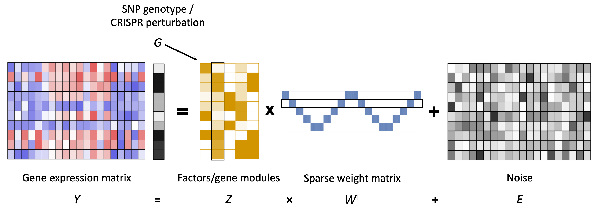

Motivation
Genetic perturbation often regulates the expression of a network of genes via trans effect.
Current computational approaches to detect trans genetic effects include:
- Per-gene association analysis such as trans-eQTL analysis and differential expression analysis, but bears huge multiple testing burden;
- Sparse factor analysis which takes advantage of “gene modules”, but subsequent analyses are necessary to interpret the biological meaning of factors.
Our approach to detect the effect of genetic perturbation:
- Identify genetically controlled factors that are correlated with the perturbation in a joint statistical framework.
We developed GSFA (Guided Sparse Factor Analysis), a factor analysis model that can infer unobserved intermediate factors given observed gene expression levels, with the advantage of inferred factors being sparse and their correlation with given sample-level conditions (e.g. genotype, CRISPR perturbation).
GSFA Model

Given a matrix \(Y \in \mathbb{R}^{N \times P}\) that holds the normalizd expression levels of \(P\) genes in \(N\) samples, and a guide matrix \(G \in \mathbb{R}^{N \times M}\) that holds \(M\) types of sample-level conditions:
\(Y = ZW^T+E\), where \(Z \in \mathbb{R}^{N \times K}\), \(W \in \mathbb{R}^{P \times K}\), \(E_{ij} \sim N(0,\psi_j)\),
\(Z = G \beta + \Phi\), where \(\beta \in \mathbb{R}^{M \times K}\), \(\Phi_{ik} \overset{i.i.d.}{\sim} N(0,1)\).
Both \(W\) and \(\beta\) have spike-and-slab priors.
Gibbs sampling is used to infer the model parameters from data.